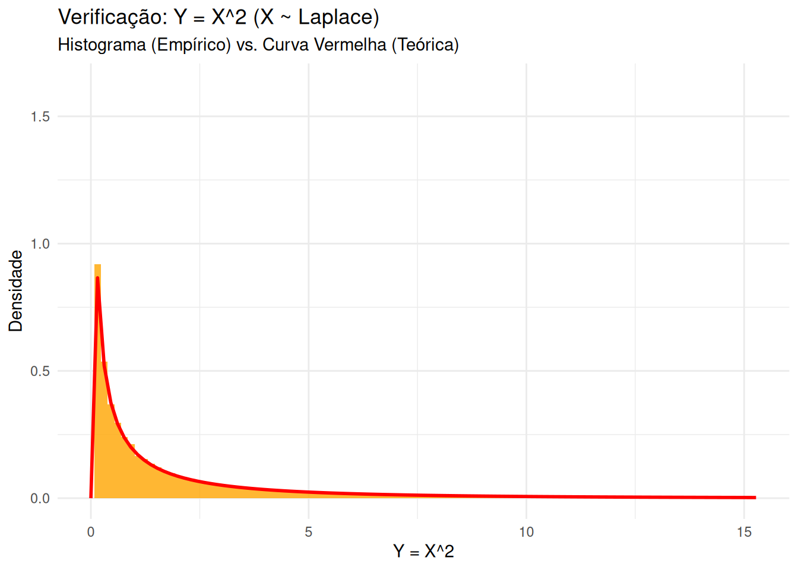

library(tidyverse)
library(patchwork)
set.seed(42)
n_pts <- 5000
cartesian_data <- tibble(
X = rnorm(n_pts, 0, 1),
Y = rnorm(n_pts, 0, 1)
)
polar_data <- cartesian_data |>
mutate(
R = sqrt(X^2 + Y^2),
Theta = atan2(Y, X) # Ângulo em radianos [-pi, pi]
)
# Plot Cartesiano (distribuição simétrica)
p_cart <- ggplot(cartesian_data, aes(x = X, y = Y)) +
geom_point(alpha = 0.1) +
coord_fixed(xlim=c(-3,3), ylim=c(-3,3)) +
labs(title = "Espaço Original (Cartesiano)") +
theme_minimal()
# Plot Polar (distribuição não é uniforme!)
p_polar <- ggplot(polar_data, aes(x = Theta, y = R)) +
geom_point(alpha = 0.1) +
# coord_polar() # Descomente para ver em formato polar
labs(title = "Espaço Transformado (Polar)", x="Ângulo (Theta)", y="Raio (R)") +
theme_minimal()
p_cart + p_polar12 Método do Jacobiano e Estatísticas de Ordem
12.1 Método do Jacobiano
Na aula anterior, vimos como encontrar a distribuição de \(Y = g(X)\) para uma única v.a. Agora, estendemos para o caso multivariado: encontrar a distribuição de um vetor \(\underline{Y} = g(\underline{X})\), onde \(g: \mathbb{R}^n \rightarrow \mathbb{R}^n\) é uma transformação.
Seja \(\underline{X}\) um vetor aleatório com f.d.p. conjunta \(f_{\underline{X}}\) e que assume valores em um domínio \(G_0 \subseteq \mathbb{R}^n\). Suponha que queiramos obter a distribuição de \(\underline{Y} = g(\underline{X})\).
Vamos assumir que \(g: G_0 \rightarrow G\), \(G \subseteq \mathbb{R}^n\), é bijetiva e diferenciável com inversa \(g^{-1} = h: G \rightarrow G_0\), também diferenciável.
Note que \(\underline{X} = h(\underline{Y})\) e defina os Jacobianos (determinantes das matrizes de derivadas parciais): \[ J_h(\underline{y}) = \det\left( \frac{\partial \underline{x}}{\partial \underline{y}} \right) = \det\left[ \begin{array}{ccc} \frac{\partial x_1}{\partial y_1} & \dots & \frac{\partial x_1}{\partial y_n} \\ \vdots & \ddots & \vdots \\ \frac{\partial x_n}{\partial y_1} & \dots & \frac{\partial x_n}{\partial y_n} \end{array} \right] \] \[ J_g(\underline{x}) = \det\left( \frac{\partial \underline{y}}{\partial \underline{x}} \right) = \det\left[ \begin{array}{ccc} \frac{\partial y_1}{\partial x_1} & \dots & \frac{\partial y_1}{\partial x_n} \\ \vdots & \ddots & \vdots \\ \frac{\partial y_n}{\partial x_1} & \dots & \frac{\partial y_n}{\partial x_n} \end{array} \right]\]
Note que \(J_h(\underline{y}) = [J_g(\underline{x})]^{-1}\). Sob essas condições, a densidade de \(\underline{Y}\) é: \[ f_{\underline{Y}}(\underline{y}) = f_{\underline{X}}(h(\underline{y})) |J_h(\underline{y})| = f_{\underline{X}}(h(\underline{y})) \left| \frac{1}{J_g(h(\underline{y}))} \right|, \quad \underline{y} \in G \]
DicaPerspectiva de Data Science: O Fator de Correção de Volume
TODO: ver versão original e verificar se esta está correta.
O Método do Jacobiano é a generalização da “mudança de variável” na integração para múltiplas dimensões.
- Intuição: Quando transformamos o espaço (ex: de coordenadas cartesianas \((X_1, X_2)\) para polares \((Y_1=\text{raio}, Y_2=\text{ângulo})\)), a “densidade” da probabilidade muda. Uma região pequena no espaço original pode ser “esticada” ou “encolhida” no novo espaço.
- \(|J_h(\underline{y})|\): O valor absoluto do Jacobiano é o fator de escala local dessa transformação. Ele nos diz quanto um “pequeno volume” (área em 2D, volume em 3D, etc.) ao redor de \(\underline{y}\) foi expandido ou contraído em relação ao volume correspondente ao redor de \(\underline{x} = h(\underline{y})\).
- Aplicação: Usamos essa técnica (muitas vezes implicitamente) em:
- Simulação: Para gerar amostras de distribuições complexas (ex: Transformação de Box-Muller para gerar Normais a partir de Uniformes).
- Modelagem: Para entender como a normalização ou outras transformações de features (ex: PCA) afetam a distribuição conjunta dos dados.
- Inferência Bayesiana: Na reparametrização de modelos.
Exemplo 12.1 (Exemplo 2.19) Seja \(\underline{X} = (X_1, X_2)\) com \(f_{\underline{X}}(\underline{x}) = 4 x_1 x_2 I_{[0, 1]}(x_1) I_{[0, 1]}(x_2)\). Obtenha a distribuição de \(\underline{Y} = (Y_1, Y_2)\) com \(Y_1 = X_1/X_2\) e \(Y_2 = X_1 X_2\).
Notemos que \(\underline{y} = g(\underline{x}) = (x_1/x_2, x_1 x_2)\). A inversa é \(\underline{x} = h(\underline{y})\): \(X_1 = (Y_1 Y_2)^{1/2}\) \(X_2 = (Y_2 / Y_1)^{1/2}\)
O Jacobiano da transformação inversa \(h(\underline{y})\) é: \[ \begin{align*} \frac{\partial x_1}{\partial y_1} &= \frac{1}{2} (Y_1 Y_2)^{-1/2} Y_2 = \frac{1}{2} \sqrt{Y_2/Y_1} \\ \frac{\partial x_1}{\partial y_2} &= \frac{1}{2} (Y_1 Y_2)^{-1/2} Y_1 = \frac{1}{2} \sqrt{Y_1/Y_2} \\ \frac{\partial x_2}{\partial y_1} &= \frac{1}{2} (Y_2 / Y_1)^{-1/2} (-Y_2 / Y_1^2) = -\frac{1}{2} \sqrt{Y_1/Y_2} (Y_2/Y_1) = -\frac{1}{2} \sqrt{Y_2/Y_1^3} \\ \frac{\partial x_2}{\partial y_2} &= \frac{1}{2} (Y_2 / Y_1)^{-1/2} (1 / Y_1) = \frac{1}{2} \sqrt{Y_1/Y_2} (1/Y_1) = \frac{1}{2} \sqrt{1/(Y_1 Y_2)} \end{align*} \] \[ J_h(\underline{y}) = \det \begin{pmatrix} \frac{1}{2} \sqrt{Y_2/Y_1} & \frac{1}{2} \sqrt{Y_1/Y_2} \\ -\frac{1}{2} \sqrt{Y_2/Y_1^3} & \frac{1}{2} \sqrt{1/(Y_1 Y_2)} \end{pmatrix} = \frac{1}{4} \sqrt{\frac{Y_2}{Y_1} \frac{1}{Y_1 Y_2}} - (-\frac{1}{4} \sqrt{\frac{Y_1}{Y_2} \frac{Y_2}{Y_1^3}}) \] \[ = \frac{1}{4} \sqrt{\frac{1}{Y_1^2}} + \frac{1}{4} \sqrt{\frac{1}{Y_1^2}} = \frac{1}{4} \frac{1}{|Y_1|} + \frac{1}{4} \frac{1}{|Y_1|} = \frac{1}{2|Y_1|} \] Como \(X_1, X_2 \in [0, 1]\), temos \(Y_1=X_1/X_2 > 0\), então \(|Y_1| = Y_1\). Logo \(|J_h(\underline{y})| = \frac{1}{2y_1}\).
Aplicando a fórmula: \[ \begin{align*} f_{\underline{Y}}(\underline{y}) &= f_{\underline{X}}(h(\underline{y})) |J_h(\underline{y})| \\ &= 4 x_1 x_2 \cdot \frac{1}{2y_1} \quad \text{substituindo } x_1, x_2 \\ &= 4 (y_1 y_2)^{1/2} (y_2/y_1)^{1/2} \cdot \frac{1}{2y_1} \\ &= 4 (y_2^2)^{1/2} \cdot \frac{1}{2y_1} = 4 y_2 \cdot \frac{1}{2y_1} = \frac{2y_2}{y_1} \end{align*} \] O domínio \(G\) para \(\underline{Y}\) é determinado pelas restrições \(0 < x_1 < 1\) e \(0 < x_2 < 1\). \(0 < (y_1 y_2)^{1/2} < 1 \implies 0 < y_1 y_2 < 1\) \(0 < (y_2 / y_1)^{1/2} < 1 \implies 0 < y_2 / y_1 < 1 \implies y_2 < y_1\) Então, \(G = \{(y_1, y_2) : y_1 > 0, y_2 > 0, y_2 < y_1, y_1 y_2 < 1\}\). \[ f_{\underline{Y}}(y_1, y_2) = \frac{2y_2}{y_1} I_G(y_1, y_2) \]
Exemplo 12.2 (Exemplo 2.20: Soma e Diferença de Normais) Sejam \(X_1\) e \(X_2\) v.a.s independentes com distribuição \(N(0, 1)\). Obtenha a distribuição de \(\underline{Y} = (Y_1, Y_2)\) com \(Y_1 = X_1 + X_2\) e \(Y_2 = X_1 - X_2\). Verifique se \(Y_1\) e \(Y_2\) são independentes.
A transformação é \(g(x_1, x_2) = (x_1+x_2, x_1-x_2)\). A inversa é \(h(y_1, y_2) = (\frac{y_1 + y_2}{2}, \frac{y_1 - y_2}{2})\). O Jacobiano da inversa \(h\) é: \[ J_h(y_1, y_2) = \det\left[ \begin{array}{cc} \frac{\partial x_1}{\partial y_1} & \frac{\partial x_1}{\partial y_2} \\ \frac{\partial x_2}{\partial y_1} & \frac{\partial x_2}{\partial y_2} \end{array} \right] = \det\left[ \begin{array}{cc} 1/2 & 1/2 \\ 1/2 & -1/2 \end{array} \right] = -\frac{1}{4} - \frac{1}{4} = -\frac{1}{2} \] O valor absoluto é \(|J_h(y_1, y_2)| = 1/2\).
A densidade conjunta de \(X_1, X_2\) (por independência) é: \[ f_{\underline{X}}(x_1, x_2) = f_{X_1}(x_1) f_{X_2}(x_2) = \frac{1}{\sqrt{2\pi}} e^{-x_1^2/2} \frac{1}{\sqrt{2\pi}} e^{-x_2^2/2} = \frac{1}{2\pi} e^{-(x_1^2+x_2^2)/2} \] Aplicando a fórmula do Jacobiano: \[ \begin{align*} f_{\underline{Y}}(y_1, y_2) &= f_{\underline{X}}(h(y_1, y_2)) |J_h(y_1, y_2)| \\ &= \frac{1}{2\pi} \exp\left\{ -\frac{1}{2} \left[ \left(\frac{y_1+y_2}{2}\right)^2 + \left(\frac{y_1-y_2}{2}\right)^2 \right] \right\} \cdot \frac{1}{2} \\ &= \frac{1}{4\pi} \exp\left\{ -\frac{1}{2} \left[ \frac{y_1^2 + 2y_1y_2 + y_2^2}{4} + \frac{y_1^2 - 2y_1y_2 + y_2^2}{4} \right] \right\} \\ &= \frac{1}{4\pi} \exp\left\{ -\frac{1}{8} (2y_1^2 + 2y_2^2) \right\} = \frac{1}{4\pi} \exp\left\{ -\frac{y_1^2}{4} - \frac{y_2^2}{4} \right\} \end{align*} \] Podemos fatorar a densidade conjunta como produto das marginais? \[ f_{\underline{Y}}(y_1, y_2) = \left( \frac{1}{\sqrt{4\pi}} e^{-y_1^2 / (2 \cdot 2)} \right) \left( \frac{1}{\sqrt{4\pi}} e^{-y_2^2 / (2 \cdot 2)} \right) \] Sim! Reconhecemos a forma da densidade Normal \(N(\mu=0, \sigma^2=2)\). \(f_{\underline{Y}}(y_1, y_2) = f_{Y_1}(y_1) f_{Y_2}(y_2)\), onde \(Y_1 \sim N(0, 2)\) e \(Y_2 \sim N(0, 2)\).
Como a densidade conjunta fatorou no produto das marginais, \(Y_1\) e \(Y_2\) são independentes.
DicaPerspectiva de Data Science: Propriedades da Normal e PCA
Este resultado é muito importante:
- Soma/Diferença de Normais: A soma (\(Y_1\)) e a diferença (\(Y_2\)) de duas Normais independentes também são Normais.
- Variância: A variância da soma/diferença é a soma das variâncias: \(\text{Var}(X_1 \pm X_2) = \text{Var}(X_1) + \text{Var}(X_2) = 1 + 1 = 2\).
- Independência: A soma e a diferença são independentes. Isso é uma propriedade especial da Normal.
Essa transformação (\(Y_1=X_1+X_2, Y_2=X_1-X_2\)) é essencialmente uma rotação de 45 graus no espaço \((X_1, X_2)\). O fato de que \(Y_1\) e \(Y_2\) são independentes (sua covariância é zero) significa que encontramos os eixos principais da distribuição. Isso é a base da Análise de Componentes Principais (PCA), uma técnica fundamental de redução de dimensionalidade. PCA busca rotações do espaço original para encontrar novas variáveis (componentes principais) que são não-correlacionadas (independentes, no caso Normal).
12.2 Estatísticas de Ordem
Definição 12.1 (Definição 2.8) Variáveis aleatórias que possuem a mesma distribuição são chamadas de identicamente distribuídas (i.d.). Se \(X_1, \dots, X_n\) são v.a.s independentes e i.d. (iid), com função de distribuição \(F_X\), dizemos que os \(X_i\)’s formam uma amostra aleatória de tamanho \(n\).
As \(X_i\)’s ordenadas em ordem crescente são as estatísticas de ordem da amostra e são representadas por \(X_{(1)}, X_{(2)}, \dots, X_{(n)}\), em que, para \(\omega \in \Omega\), \((X_{(1)}(\omega), \dots, X_{(n)}(\omega))\) é qualquer permutação que satisfaz \(X_{(1)}(\omega) \le X_{(2)}(\omega) \le \dots \le X_{(n)}(\omega)\).
Nota: \(X_{(1)}\) é o mínimo da amostra, i.e. \(X_{(1)} = \min\{X_1, \dots, X_n\}\). \(X_{(n)}\) é o máximo da amostra, i.e. \(X_{(n)} = \max\{X_1, \dots, X_n\}\).
DicaPerspectiva de Data Science: Mínimos, Máximos e Quantis
As estatísticas de ordem são extremamente práticas:
- \(X_{(1)}\) (Mínimo):
min(column). Usado em análise de risco (pior caso), controle de qualidade (menor tempo de vida), performance (menor latência). - \(X_{(n)}\) (Máximo):
max(column). Usado em análise de risco (melhor caso, maior perda), detecção de anomalias (valores extremos), performance (pico de carga). - \(X_{(k)}\) (k-ésima estatística): A base dos quantis e percentis.
- A mediana é \(X_{((n+1)/2)}\) (se n ímpar) ou a média de \(X_{(n/2)}\) e \(X_{(n/2+1)}\) (se n par).
median(column). - O Percentil 95 é aproximadamente \(X_{(0.95 \cdot n)}\).
quantile(column, 0.95).
- A mediana é \(X_{((n+1)/2)}\) (se n ímpar) ou a média de \(X_{(n/2)}\) e \(X_{(n/2+1)}\) (se n par).
- Análise Exploratória: O Box Plot é construído usando estatísticas de ordem (mínimo, Q1=\(X_{(0.25n)}\), mediana, Q3=\(X_{(0.75n)}\), máximo).
Proposição 12.1 (Proposição 2.8) Se \((X_1, \dots, X_n)\) é uma a.a. de X com densidade \(f\), então a densidade conjunta das estatísticas de ordem é: \[ f_{X_{(1)}, \dots, X_{(n)}}(x_1, \dots, x_n) = \begin{cases} n! \prod_{i=1}^n f(x_i), & x_1 < x_2 < \dots < x_n \\ 0, & \text{c.c.} \end{cases} \]
Exemplo 12.3 (Exemplo 2.21: FDA do Mínimo e Máximo) Seja \((X_1, \dots, X_n)\) uma a.a. de X com função de distribuição \(F_X\). Obtenha expressões para função de distribuição de \(X_{(1)}\) e \(X_{(n)}\). Temos que, para \(x \in \mathbb{R}\): \[ \begin{align*} F_{X_{(1)}}(x) &= \mathbb{P}(X_{(1)} \le x) = \mathbb{P}(\min\{X_1, \dots, X_n\} \le x) \\ &= 1 - \mathbb{P}(\min\{X_1, \dots, X_n\} > x) \\ &= 1 - \mathbb{P}(X_1 > x, \dots, X_n > x) \quad \text{(Mínimo > x sse TODOS > x)}\\ &\stackrel{\text{indep.}}{=} 1 - \prod_{i=1}^n \mathbb{P}(X_i > x) \\ &= 1 - \prod_{i=1}^n [1 - \mathbb{P}(X_i \le x)] = 1 - \prod_{i=1}^n [1 - F_{X_i}(x)] \\ &\stackrel{\text{i.d.}}{=} 1 - [1 - F_X(x)]^n \end{align*} \] \[ \begin{align*} F_{X_{(n)}}(x) &= \mathbb{P}(X_{(n)} \le x) = \mathbb{P}(\max\{X_1, \dots, X_n\} \le x) \\ &= \mathbb{P}(X_1 \le x, \dots, X_n \le x) \quad \text{(Máximo <= x sse TODOS <= x)}\\ &\stackrel{\text{indep.}}{=} \prod_{i=1}^n \mathbb{P}(X_i \le x) \\ &\stackrel{\text{i.d.}}{=} \prod_{i=1}^n F_X(x) = [F_X(x)]^n \end{align*} \]
DicaPerspectiva de Data Science: Modelando Extremos
Essas duas fórmulas são muito úteis:
- FDA do Mínimo: \(F_{min}(x) = 1 - [1 - F_X(x)]^n\)
- Usada em Análise de Sobrevivência/Confiabilidade: Se \(X\) é o tempo de vida de um componente e temos \(n\) componentes em paralelo, o sistema falha quando o último falha (máximo). Se eles estão em série, o sistema falha quando o primeiro falha (mínimo). \(F_{min}(x)\) dá a probabilidade do sistema em série falhar antes do tempo \(x\).
- FDA do Máximo: \(F_{max}(x) = [F_X(x)]^n\)
- Usada em Gerenciamento de Risco/Engenharia: Qual a probabilidade do pico de carga em \(n\) servidores ser menor que \(x\)? Qual a probabilidade da pior perda em \(n\) investimentos ser menor que \(x\)?
Podemos derivar essas FDAs para obter as FDPs do mínimo e máximo: * \(f_{min}(x) = n [1 - F_X(x)]^{n-1} f_X(x)\) * \(f_{max}(x) = n [F_X(x)]^{n-1} f_X(x)\)
Exemplo 12.4 (Exemplo 2.22) \(X\) v.a. com \(f_X(x) = \frac{1}{2} e^{-|x|}, x \in \mathbb{R}\) (Distribuição de Laplace). Obtenha a distribuição de \(Y = X^2\).
Para \(y > 0\): \[ \begin{align*} F_Y(y) &= \mathbb{P}(Y \le y) = \mathbb{P}(X^2 \le y) = \mathbb{P}(-\sqrt{y} \le X \le \sqrt{y}) \\ &= \mathbb{P}(X \le \sqrt{y}) - \mathbb{P}(X < -\sqrt{y}) \\ &= F_X(\sqrt{y}) - F_X(-\sqrt{y}^{-}) \quad \text{(Cuidado com pontos discretos, mas aqui X é contínua)} \\ &= F_X(\sqrt{y}) - F_X(-\sqrt{y}) \quad \text{(pois P(X=x)=0 para X contínua)} \end{align*} \] Derivando a FDA para obter a FDP (usando a Regra da Cadeia): \[ \begin{align*} f_Y(y) &= \frac{d}{dy} F_Y(y) = \frac{d}{dy} [F_X(\sqrt{y}) - F_X(-\sqrt{y})] \\ &= f_X(\sqrt{y}) \cdot \frac{d}{dy}(\sqrt{y}) - f_X(-\sqrt{y}) \cdot \frac{d}{dy}(-\sqrt{y}) \\ &= f_X(\sqrt{y}) \cdot \left(\frac{1}{2\sqrt{y}}\right) - f_X(-\sqrt{y}) \cdot \left(-\frac{1}{2\sqrt{y}}\right) \\ &= \frac{1}{2\sqrt{y}} [f_X(\sqrt{y}) + f_X(-\sqrt{y})] \end{align*} \] Substituindo \(f_X(x) = \frac{1}{2} e^{-|x|}\): \(f_X(\sqrt{y}) = \frac{1}{2} e^{-|\sqrt{y}|} = \frac{1}{2} e^{-\sqrt{y}}\) (pois \(y>0 \implies \sqrt{y}>0\)) \(f_X(-\sqrt{y}) = \frac{1}{2} e^{-|-\sqrt{y}|} = \frac{1}{2} e^{-\sqrt{y}}\) \[ f_Y(y) = \frac{1}{2\sqrt{y}} [\frac{1}{2} e^{-\sqrt{y}} + \frac{1}{2} e^{-\sqrt{y}}] = \frac{1}{2\sqrt{y}} [e^{-\sqrt{y}}] \] \[ f_Y(y) = \frac{1}{2\sqrt{y}} e^{-\sqrt{y}}, \quad y > 0 \] (Esta é relacionada à distribuição Gama ou Chi-quadrado).
12.3 Implementação Prática em R
Visualizando o Jacobiano (Cartesiano -> Polar)
Vamos transformar pontos \((X, Y)\) (Normais independentes) em coordenadas polares \((R, \Theta)\). \(R = \sqrt{X^2 + Y^2}\) \(\Theta = \text{atan2}(Y, X)\)
A transformação \(g(x, y) = (\sqrt{x^2+y^2}, \text{atan2}(y, x))\) não tem um Jacobiano constante. O fator de escala \(|J|\) depende do raio \(r\).
DicaObservação Jacobiano Polar
No gráfico polar (R vs Theta), a densidade de pontos não é uniforme. Há mais pontos perto de R=0. Isso ocorre porque a transformação cartesiana para polar “comprime” a área perto da origem e “expande” a área longe dela. O Jacobiano \(|J|=r\) captura esse fator de escala dependente do raio. A densidade \(f_{R, \Theta}(r, \theta)\) precisa desse fator \(r\) para ser correta.
Estatísticas de Ordem
set.seed(123)
# Amostra aleatória (IID) de uma Normal
amostra <- rnorm(n = 10, mean = 50, sd = 10)
cat("Amostra Original (X1..X10):\n", round(amostra, 1), "\n\n")Amostra Original (X1..X10):
44.4 47.7 65.6 50.7 51.3 67.2 54.6 37.3 43.1 45.5 # Ordenar a amostra
estatisticas_ordem <- sort(amostra)
cat("Estatísticas de Ordem (X(1)..X(10)):\n", round(estatisticas_ordem, 1), "\n\n")Estatísticas de Ordem (X(1)..X(10)):
37.3 43.1 44.4 45.5 47.7 50.7 51.3 54.6 65.6 67.2 # Mínimo, Máximo, Mediana
X_min <- min(amostra) # = estatisticas_ordem[1]
X_max <- max(amostra) # = estatisticas_ordem[10]
X_mediana <- median(amostra) # = mean(estatisticas_ordem[5], estatisticas_ordem[6])
cat("Mínimo X(1):", round(X_min, 1), "\n")Mínimo X(1): 37.3 cat("Máximo X(10):", round(X_max, 1), "\n")Máximo X(10): 67.2 cat("Mediana:", round(X_mediana, 1), "\n")Mediana: 49.2 # Quantis (ex: Percentil 25 e 75)
quantis <- quantile(amostra, probs = c(0.25, 0.75))
cat("Quantil 25% (Q1):", round(quantis[1], 1), "\n") # ~= X(2.5) -> interpolaQuantil 25% (Q1): 44.7 cat("Quantil 75% (Q3):", round(quantis[2], 1), "\n") # ~= X(7.5) -> interpolaQuantil 75% (Q3): 53.8 Verificando as FDAs do Mínimo e Máximo (Exemplo 2.21)
Vamos simular muitas amostras, calcular o min/max de cada uma, e comparar a FDA empírica com a fórmula teórica. Usaremos \(X_i \sim U(0, 1)\) onde \(F_X(x) = x\).
- Teórica Min: \(F_{min}(x) = 1 - (1 - x)^n\)
- Teórica Max: \(F_{max}(x) = x^n\)
n_amostras <- 10000
n_tamanho <- 5 # Tamanho de cada amostra
# Gerar n_amostras, cada uma com n_tamanho obs U(0,1)
# Resultado é uma matriz n_amostras x n_tamanho
matriz_amostras <- matrix(runif(n_amostras * n_tamanho), nrow = n_amostras)
# Calcular min e max de cada linha (cada amostra)
minimos <- apply(matriz_amostras, 1, min)
maximos <- apply(matriz_amostras, 1, max)
df_min_max <- tibble(X_min = minimos, X_max = maximos)
# Plotar FDA Empírica do Mínimo vs. Teórica
p_min <- ggplot(df_min_max, aes(x = X_min)) +
stat_ecdf(geom = "point", aes(color = "Empírica"), alpha=0.5, size=0.5) +
stat_function(fun = function(x) 1 - (1 - x)^n_tamanho, aes(color = "Teórica"), linewidth=1) +
labs(title = "FDA do Mínimo X(1)", x = "x", y = "F(x)") +
scale_color_manual(values = c("Empírica" = "blue", "Teórica" = "red")) +
theme_minimal() + theme(legend.title=element_blank())
# Plotar FDA Empírica do Máximo vs. Teórica
p_max <- ggplot(df_min_max, aes(x = X_max)) +
stat_ecdf(geom = "point", aes(color = "Empírica"), alpha=0.5, size=0.5) +
stat_function(fun = function(x) x^n_tamanho, aes(color = "Teórica"), linewidth=1) +
labs(title = "FDA do Máximo X(n)", x = "x", y = "F(x)") +
scale_color_manual(values = c("Empírica" = "blue", "Teórica" = "red")) +
theme_minimal() + theme(legend.title=element_blank())
p_min + p_maxVerificando Transformação Univariada \(Y = X^2\) (Exemplo 2.22)
Simulamos \(X\) da distribuição de Laplace, calculamos \(Y = X^2\), e comparamos o histograma com a \(f_Y(y)\) derivada.
n_sim <- 100000
# Função para gerar da Laplace(0, 1): f(x)=0.5*exp(-|x|)
# (Usando o método da inversa: Exp(1) com sinal aleatório)
rlaplace <- function(n) {
rexp(n, rate = 1) * sample(c(-1, 1), n, replace = TRUE)
}
X <- rlaplace(n_sim)
Y <- X^2
# Função de densidade teórica derivada para Y
f_Y_teorica <- function(y) {
ifelse(y <= 0, 0, (1 / (2 * sqrt(y))) * exp(-sqrt(y)))
}
# Plotar
ggplot(tibble(Y = Y), aes(x = Y)) +
geom_histogram(aes(y = after_stat(density)), bins = 100, fill = "orange", alpha = 0.8) +
stat_function(fun = f_Y_teorica, color = "red", linewidth = 1) +
labs(
title = "Verificação: Y = X^2 (X ~ Laplace)",
subtitle = "Histograma (Empírico) vs. Curva Vermelha (Teórica)",
x = "Y = X^2",
y = "Densidade"
) +
theme_minimal() +
# Limitar eixo x para melhor visualização (cauda longa)
xlim(0, quantile(Y, 0.98))Warning: Removed 2000 rows containing non-finite outside the scale range
(`stat_bin()`).Warning: Removed 2 rows containing missing values or values outside the scale range
(`geom_bar()`).